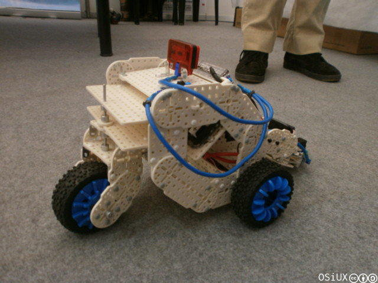
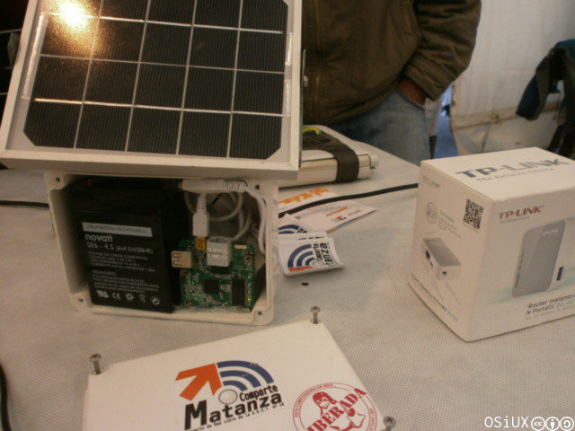

MatanzaComparte y RedesLibres en Plaza Ciencia 2013
index | OSiUX | blog | docs | charlas | rss
La feria
La Secretaría de Ciencia, Tecnología y Políticas Educativas del Municipio de la Matanza organiza la Segunda Muestra Municipal de Ciencia y Tecnología del 12 al 19 de Junio.
Donde las escuelas técnicas exponen los proyectos que realizan los estudiantes. Es sorprendente la variedad de propuestas, desde la fabricación de materiales de construcción a partir de objetos reciclados de uso común.
También hubo un stand de capacitación de las diferentes herramientas incluídas en Huayra GNU/Linux 1 y de Conectar Igualdad 2
Varios robots circulaban por los pasillos:

MatanzaComparte
Los estudiantes de la Escuela Ténica Nro 10 de Villa Madero, a cargo
del profesor Eduardo Sandulli presentaron un proyecto de red libre
MatanzaComparte usando un panel solar para dar autonomía a un
router TP-Link MR3020 usando Altermesh 3.

Las charlas
Un extenso cronograma 4 de charlas llenó el auditorio del evento:
El viernes 14, junto a María Elena Casañas 5 y Eduardo Sandulli participé de un panel de Tecnologías libres para la comunicación soberana, donde se charló sobre los problemas actuales de privacidad en Internet y como contrapartida se mostró la alternativa para controlar nuestras comunicaciones ofrecidas por modelos autogestionados de RedesLibres 6 como el caso del uso del firmware Altermesh generado por Altermudi 7.
Están disponibles los slides 8 de la presentación de RedesLibres: